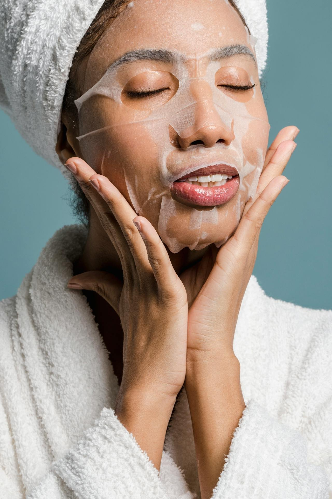

Meditation for Your Skin: Mindful Facial Treatments That Calm Both Mind and Complexion

Hadiyah Daché, licensed cosmetologist & esthetician
Facials & Treatments
5 min
← All articlesThe Book →Friendly reminder: this post contains affiliate links, which help support the Glowdega Archive. If you buy through them, I may earn a commission at no extra cost to you.
Imagine a skincare routine that goes beyond mere cleansing and moisturizing—one that transforms into a daily ritual of self-connection and inner calm. This is the essence of mindful skincare, where each gentle touch and soothing application becomes a form of meditation. At Glowdega, we've cultivated the art of merging skincare with mindfulness, offering treatments that nourish not just your skin, but your entire being.
Mindful skincare invites you to slow down and be present with each step of your routine. It's about paying attention to the textures, scents, and sensations as you care for your skin. This practice isn't just about achieving a glowing complexion; it's about creating moments of tranquility and self-care in your day.
At Glowdega, we believe that true beauty emerges when you're fully present and at peace with yourself. Our approach to skincare goes beyond surface-level treatments, incorporating mindfulness techniques to create a holistic experience that benefits both your skin and your overall well-being.
The Stress-Skin Connection: A Complex Physiological Interplay
The relationship between stress and skin health is far more than skin-deep. It's a complex interplay of hormones, neurotransmitters, and physiological responses that can significantly impact your skin's appearance and function.
At the heart of this connection is the hypothalamic-pituitary-adrenal (HPA) axis, your body's stress response system. When you're under pressure, this system kicks into high gear, triggering a cascade of hormonal changes:
Cortisol: Often called the "stress hormone," cortisol plays a crucial role in the stress-skin connection. Elevated cortisol levels can increase sebum production, potentially leading to acne breakouts. It can also impair your skin's barrier function, making it more susceptible to irritants and environmental stressors. Moreover, cortisol can accelerate the breakdown of collagen and elastin, contributing to premature aging.
Adrenaline: This "fight or flight" hormone redirects blood flow away from your skin to vital organs, potentially leaving your complexion looking dull and sallow. It can also exacerbate inflammatory skin conditions like eczema and psoriasis.
Neuropeptides: These molecules are released by nerve endings in your skin in response to stress. They can trigger inflammation and skin sensitivity, potentially worsening conditions like rosacea.
Substance P: This neuropeptide is involved in pain perception and can trigger the release of inflammatory chemicals in the skin. Increased levels of Substance P have been associated with skin conditions like acne and psoriasis.
But the stress-skin connection isn't solely about hormones. Chronic stress can also:
Disrupt your skin's microbiome, the delicate balance of microorganisms that play a crucial role in skin health and immunity.
Impair wound healing by slowing down the production of growth hormone and other healing factors.
Exacerbate oxidative stress, leading to increased free radical damage and accelerated aging.
The good news is that this intricate connection works both ways. Just as stress can negatively impact your skin, practices that reduce stress can have profound positive effects. Mindfulness - the practice of being present and fully engaged with your current experience - can be a powerful tool in mitigating the effects of stress on your skin.
Mindfulness practices have been shown to:
Lower cortisol levels, potentially reducing acne breakouts and slowing the aging process.
Improve sleep quality, which is crucial for skin repair and regeneration.
Enhance blood flow, bringing vital nutrients and oxygen to your skin cells.
Reduce inflammation throughout the body, including in the skin.
By incorporating mindfulness into your skincare routine, you're not just addressing the physical aspects of skin health. You're also targeting one of the root causes of many skin issues: stress. This holistic approach can lead to improvements not just in your skin's appearance, but in your overall well-being.
At Glowdega, we understand this intricate connection between mind and skin. That's why our treatments go beyond surface-level care, incorporating mindfulness techniques to create a truly holistic skincare experience. By nurturing both your skin and your mind, we help you achieve a level of radiance that comes from deep within.
Glowdega's Mindfulness-Incorporated Facial Treatments: Where Science Meets Serenity
We believe that true beauty emerges when you're at peace with yourself. It’s that ethos that lead us to develop facial treatments that go beyond surface-level care, incorporating mindfulness techniques to create a holistic experience. Let's explore two of our signature treatments that exemplify this approach:
Buccal Massage: The Inner Facial
Buccal massage is a technique that works from the inside out - literally. This treatment involves massaging the face both externally and internally (inside the mouth). While it might sound unusual, the effects are nothing short of transformative.
During a buccal massage at Glowdega, you're not just receiving a treatment; you're embarking on a mindful journey. As our skilled estheticians work on releasing tension from the deepest layers of your facial muscles, you're guided to focus on your breath, becoming aware of each sensation. This heightened state of awareness not only enhances the physical benefits of the massage but also induces a meditative state.
The result? Sculpted, lifted features and a profound sense of relaxation that radiates from within.
Facial Cupping: The Art of Letting Go
Facial cupping is an ancient technique that's found new life in the world of modern skincare. Using small, specialized cups, this treatment creates a gentle suction on the skin, promoting blood flow and lymphatic drainage.
At Glowdega, we've elevated facial cupping into a mindful ritual. As the cups glide across your skin, you're encouraged to visualize the tension and toxins being drawn out, not just from your skin but from your mind as well. The rhythmic movements become a focus point for meditation, allowing you to let go of stress and negative thoughts.
This treatment doesn't just leave your skin glowing; it leaves your mind clear and your spirit lifted.
Finding Your OM
In conclusion, mindful skincare is more than a beauty trend - it's a pathway to holistic well-being. By treating your skincare routine as a form of meditation, you're not just investing in your complexion; you're cultivating inner peace. Whether you're experiencing one of our mindfulness-incorporated treatments at Glowdega or practicing these techniques at home, remember: every moment of mindful skincare is a step towards a calmer mind and a more radiant complexion.